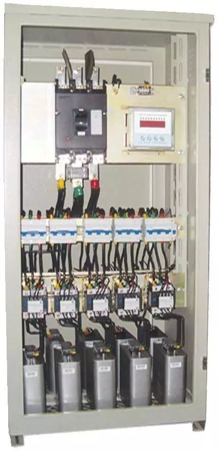
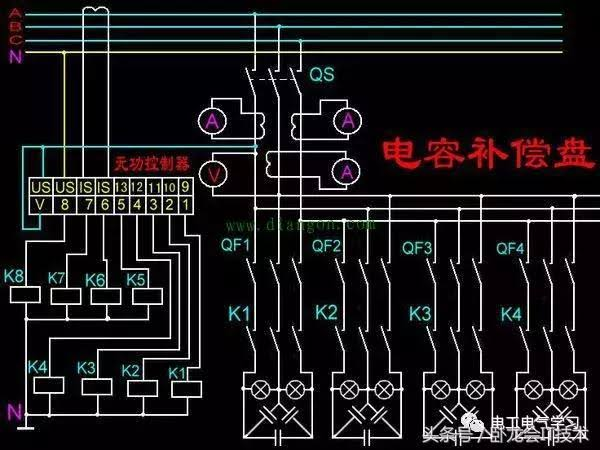

2020/08/08
1、视在功率：视在功率是指发电机发出的总功率，其中可以分为有功部分和无功部分。
2、有功功率：有功功率是保持用电设备正常运行所需的电功率，也就是将电能转换为其他形式能量（机械能、光能、热能）的电功率。
3、无功功率：是用于电路内电场与磁场的交换，并用来在电气设备中建立和维持磁场的电功率，它不对外作功，而是转变为其他形式的能量。凡是有电磁线圈的电气设备，建立磁场，就要消耗无功功率。无功功率不做功，但要保证有功功率的传导必须先满足电网的无功功率。
二、需要无功补偿的原因
在正常情况下，用电设备不但要从电源取得有功功率，同时还需要从电源取得无功功率。如果电网中的无功功率供不应求，用电设备就没有足够的无功功率来建立正常的电磁场，这些用电设备就不能维持在额定情况下工作，用电设备的端电压就要下降，从而影响用电设备的正常运行。
但是从发电机和高压输电线供给的无功功率远远满足不了负荷的需要，所以在电网中要设置一些无功补偿装置来补充无功功率，以保证用户对无功功率的需要，这样用电设备才能在额定电压下工作。无功补偿是把具有容性功率负荷的装置与感性功率负荷并联接在同一电路，能量在两种负荷之间相互交换，这样，感性负荷所需要的无功功率可由容性负荷输出的无功功率补偿。
三、无功补偿的一般方法
无功补偿通常采用的方法主要有3种：低压个别补偿、低压集中补偿、高压集中补偿。下面简单介绍3种补偿方式的适用范围及使用该种补偿方式的优缺点。
1、低压个别补偿
低压个别补偿就是根据个别用电设备对无功的需要量将单台或多台低压电容器组分散地与用电设备并接，它与用电设备共用一套断路器，通过控制、保护装置与电机同时投切。随机补偿适用于补偿个别大容量且连接运行（如大中型异步电动机）的无功消耗，以补励磁无功为主。低压个别补偿的优点是：用电设备运行时，无功补偿投入，用电设备停动时，补偿设备也退出，因此不会造成无功倒送，具有投资少、占位小、安装容易、配置方便灵活、维护简单、事故率低等优点。
2、低压集中补偿
低压集中补偿是指将低压电容器通过低压开关接在配电变压器低压母线侧，以无功补偿投切装置作为控制保护装置，根据低压母线上的无功负荷而直接控制电容器的投切，电容器的投切是整组进行，做不到平滑的调节。低压补偿的优点：接线简单、运行维护工作量小，使无功就地平衡，从而提高配变利用率，降低网损，具有较高的经济性，是目前无功补偿中常用的手段之一。


3、高压集中补偿
高压集中补偿是指将并联电容器组直接装在变电所的6～10KV高压母线上的补偿方式。适用于用户远离变电所在供电线路的末端，用户本身又有一定的高压负荷时，可以减少对电力系统无功的消耗并可以起到一定的补偿作用；补偿装置根据负荷的大小自动投切，补偿效益高。
四、无功补偿装置的分类
从补偿的范围划分可以分为负荷补偿与线路补偿，从补偿的性质划分可以分为感性与容性补偿。下面将并联容性补偿的方法大致列举：
1、同步调相机
调相机的基本原理与同步发电机没有区别，它只输出无功电流。因为不发电，因此不需要原动机拖动，没有启动电机的调相机没有轴伸，实质就是相当于一台在电网中空转的同步发电机。
调相机是电网中最早使用的无功补偿装置，当增加激磁电流时，其输出的容性无功电流增大。当减少激磁电流时，其输出的容性无功电流减少。当激磁电场减少到一定程度时，输出无功电流为零，只有很小的有功电流用于弥补调相机的损耗，当激磁电流进一步减少时，输出感性无功电流。
调相机容量大、对谐波不敏感，并且具有当电网电压下降时输出无功电流自动增加的特点，因此调相机对于电网的无功安全具有不可替代的作用。
由于调相机的价格高、效率低，运行成本高，因此已经逐渐被并联电容器所替代。但是近年来出于对电网无功安全的重视，一些人主张重新启用调相机。
2、并联电容器
并联电容器是目前最主要的无功补偿方法。其主要特点是价格低，效率高，运行成本低，在保护完善的情况下可靠性也很高。
在高压及中压系统中主要使用固定连接的并联电容器组，而在低压配电系统中则主要使用自动控制电容器投切的自动无功补偿装置。自动无功补偿装置的结构则多种多样形形色色，适用于各种不同的负荷呢况。对于低压自动无功补偿装置将另文详细介绍。
并联电容器的最主要缺点是其对谐波的敏感性。当电网中含有谐波时，电容器的电流会急剧增大，还会与电网中的感性元件谐振使谐波放大，另外，并联电容器属于恒阻抗元件，在电网电压下降时其输出的无功电出下降，因此不利于电网的无功安全。
3、SVC
SVC的全称是静止式无功补偿装置，静止两个字是同步调相机的旋转相对应的。
国际大电网会议将SVC定义为7个子类：
a、机械投切电容器（MSC）
b、机械投切电抗器（MSR）
c、自饱和电抗器（SR）
d、晶闸管控制电抗器（TCR）
e、晶闸管投切电容器（TCR）
f、晶闸管投（TSC）
g、自换向或电网换向转换器（SCC/LCC）
根据以上这些子类，我们可以看出：除调相机之外，用电感或电容进行无功补偿的装置几乎均被定义为SVC。因此，目前一些资料或者广告中大量出现"SVC"字样，其原因不外乎两条：其一是作者自已并不明白SVC的定义，其二就是以普通人不懂的字母组合故弄玄虚。
目前国内市场上被宣传 SVC的产品主工是晶闸管控制电抗器（TCR）和晶闸管投切电容器（TSC）。对于TSC我们另文叙述，这里只简要介绍一下晶闸管控制电抗器（TCR）。
TCR的基本结构包括一组固定并联连接在线路中的电容器和一组并联连接在线路中用晶闸管控制的电抗器，通常将电抗器的容量设计成与电容器一样。由于电抗器是用晶闸管控制的，其感性无功电流可以变化，当晶闸管关断时，电抗器没有电流，而电容器固定连接，因此整套装置的补偿量最大，当调节晶闸管的导通角时，电抗器的感性电流就会抵消一部分电容器电流，因此补偿量减少，导通角越大，电抗器的电流越大，补偿量就越小，当晶闸管全通时，电抗器电流就会将电容器电流全部抵消，此时补偿量为0。必须将固定电容器组设计成滤波器形式或者配备另外的滤波器。
综上所述，可以看出TCR的结构复杂，损耗大，但其具有补偿量连续可调的特点，在高压系统中还有应用。
4、SVG
静止无功发生器，英文描述为：Static Var Generator，简称为SVG。又称动态无功补偿发生装置，或静止同步补偿器。是指由自换相的电力半导体桥式变流器来进行动态无功补偿的装置。SVG是目前无功功率控制领域内的最佳方案。相对于传统的调相机、电容器电抗器、以晶闸管控制电抗器TCR为主要代表的传统SVC等方式，SVG有着无可比拟的优势。
五、采用无功补偿的优点
1、根据用电设备的功率因数，可测算输电线路的电能损失。通过现场技术改造，可使低于标准要求的功率因数达标，实现节电目的。
2、采用无功补偿技术，提高低压电网和用电设备的功率因数，是节电工作的一项重要措施。
3、无功补偿，它就是借助于无功补偿设备提花必要的无功功率，以提高系统的功率因数，降低能耗，改善电网电压质量，稳定设备运行。
4、减少电力损失，一般工厂动力配线依据不同的线路及负载情况，其电力损耗约20%-30%左右，使用电容提高功率因数后，总电波降低，可降低供电流与用电端的电力损失。
5、改善供电品质，提高功率因数，减少负载总电流及电压降，于变压器二次侧加装电容可改善功率因数提高二次侧电压。
6、延长设备寿命，改善功率因数后线路总电流减少，使接近中已经饱和的变压器、开关等机器设备和线路容量负荷降低，因此可以降低温升增加寿命（温度每降低10摄氏度，寿命可延长1倍）。
7、最终满足电力系统对无功补偿的监测要求，消除因为功率因数过低而产生的罚款。
8、无功补偿可以改善电能质量、降低电能损耗、挖掘发供电设备潜力、无功补偿减少用户电费支出，是一项投资少、收效快的节能措施。
9、无功补偿技术对和电单位的低压配电网的影响以及提高功率因数所带来的经济效益和社会效益，确定无功功率的补偿容量，确保补偿技术经济、合理、安全可靠，达到节约电能的目的。